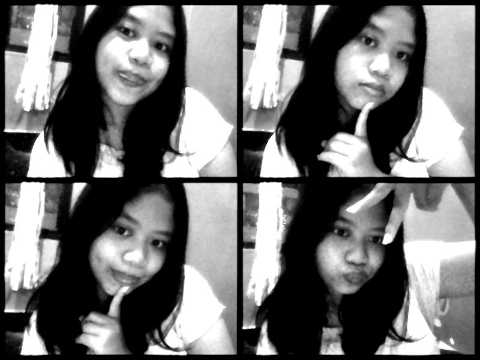

Halo, saya adalah programmer!
Mahasiswa Teknologi Informasi dengan minat pada UI/UX, pengembangan web, dan administrasi sistem Linux. Fokus saya adalah menciptakan solusi digital yang sederhana namun efektif untuk mahasiswa.
Tentang Saya
Nama: Esteria Sinaga
Umur: 20 tahun
Riwayat Pendidikan:
- SD Katolik Yos Sudarso
- SMP Katolik Santo Petrus
- SMA Katolik Santo Paulus
- Mahasiswa Teknologi Informasi Universitas Jember